coda.plot proporciona gràfics senzills per explorar
dades composicionals. En aquest tipus de dades, cada fila descriu com es
reparteix un total entre diverses parts. Per exemple, una barreja pot
estar formada per proteïna, greix i carbohidrats.
La idea més important és que totes les parts han de ser estrictament positives. No cal que les files sumin 1 o 100: les funcions treballen amb les proporcions relatives.
library(coda.plot)
#> Loading required package: coda.base
#>
#> Attaching package: 'coda.base'
#> The following object is masked from 'package:stats':
#>
#> dist
set.seed(2026)
X <- matrix(rexp(90, rate = 1), ncol = 3)
colnames(X) <- c("Proteina", "Greix", "Carbohidrats")
grup <- factor(rep(c("Control", "Tractament"), each = 15))
head(X)
#> Proteina Greix Carbohidrats
#> [1,] 0.3973469 0.7499553 0.3302451
#> [2,] 0.1130610 2.8804064 1.1843942
#> [3,] 1.5074140 0.2041778 2.1363013
#> [4,] 0.8360404 1.8247179 1.7945151
#> [5,] 0.1107380 0.3626434 1.8339835
#> [6,] 4.0741295 0.4318313 0.3468551Diagrama ternari ràpid
Quan hi ha exactament tres parts, ternary_plot() és la
manera més directa de representar-les. Cada punt correspon a una fila de
X, i la proximitat a un vèrtex indica un pes relatiu més
gran de la part que hi apareix escrita.
ternary_plot(X, group = grup)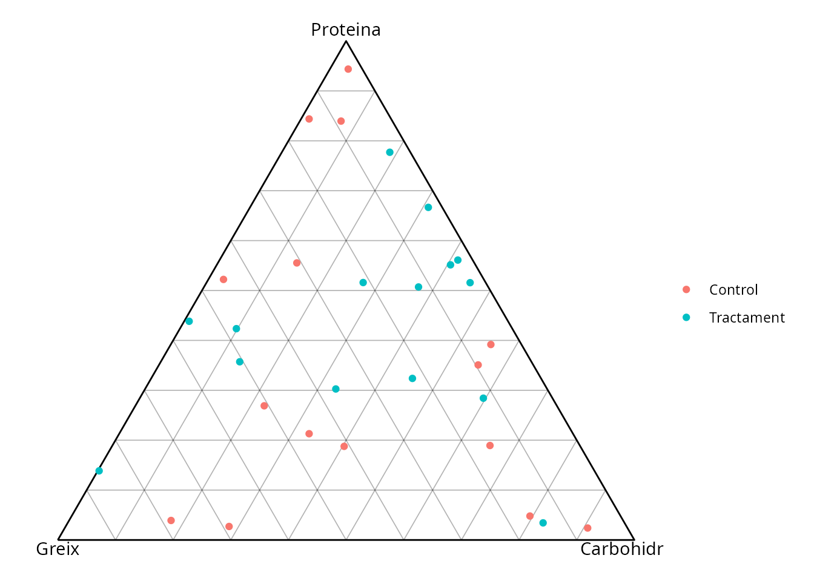
Amb center = TRUE el gràfic se centra en la composició
mitjana. scale = TRUE estandarditza la variabilitat, i
show_pc = TRUE afegeix les dues direccions principals de
variació.
ternary_plot(X, group = grup, center = TRUE, scale = TRUE, show_pc = TRUE)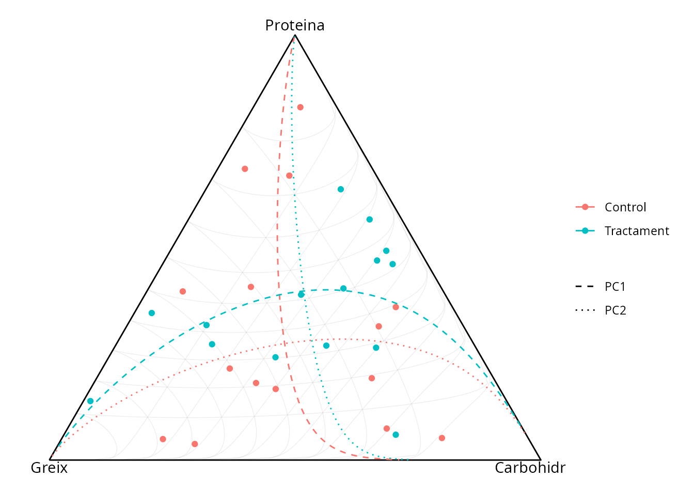
Construir un diagrama ternari per capes
La interfície modular és útil quan volem controlar cada element del
gràfic. Primer, ternary_frame() defineix la transformació i
les etiquetes. Després, ternary_base() crea el triangle, i
les funcions add_ternary_*() hi afegeixen capes.
marc <- ternary_frame(X, labels = c("P", "G", "C"))
p <- ternary_base(marc, show_grid = FALSE)
p <- add_ternary_grid(p, ticks = c(0.25, 0.50, 0.75), colour = "grey80")
#> Warning: Duplicated aesthetics after name standardisation: colour
#> Duplicated aesthetics after name standardisation: colour
#> Duplicated aesthetics after name standardisation: colour
p <- add_ternary_points(p, X, group = grup, size = 2)
p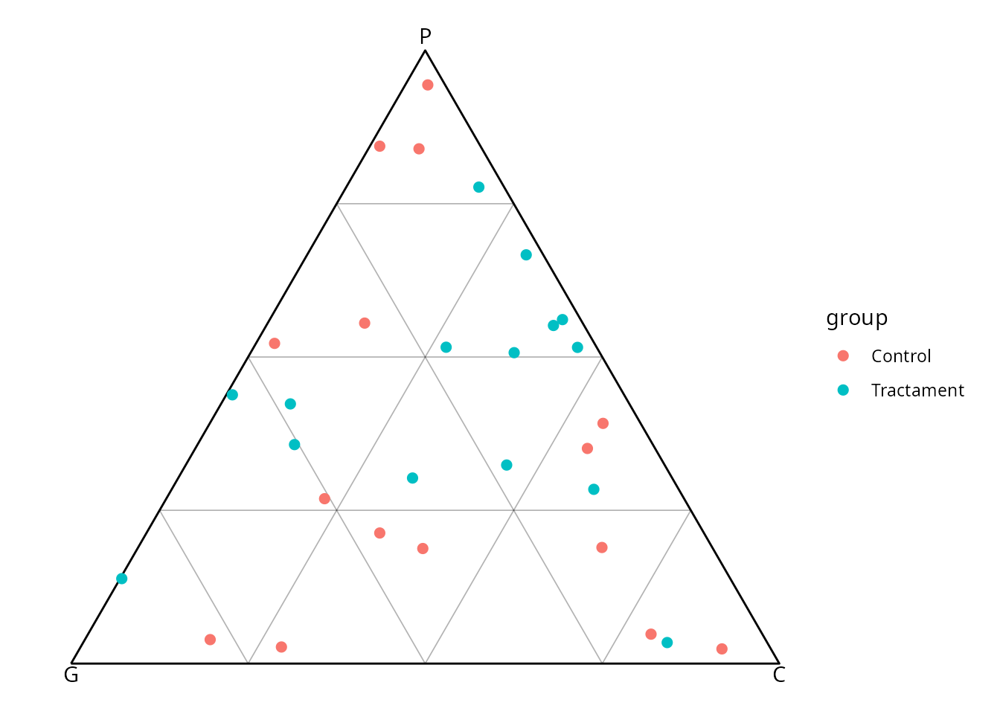
add_ternary_path() uneix composicions ordenades. En
aquest exemple, el camí mostra una transició gradual des d’una
composició rica en proteïna fins a una composició rica en
carbohidrats.
cami <- rbind(
c(8, 1, 1),
c(6, 2, 2),
c(4, 3, 3),
c(2, 3, 5),
c(1, 2, 7)
)
p <- ternary_base(ternary_frame(cami, labels = colnames(X)))
p <- add_ternary_path(p, cami, colour = "#0072B2", linewidth = 1)
add_ternary_points(p, cami, colour = "#0072B2", size = 2)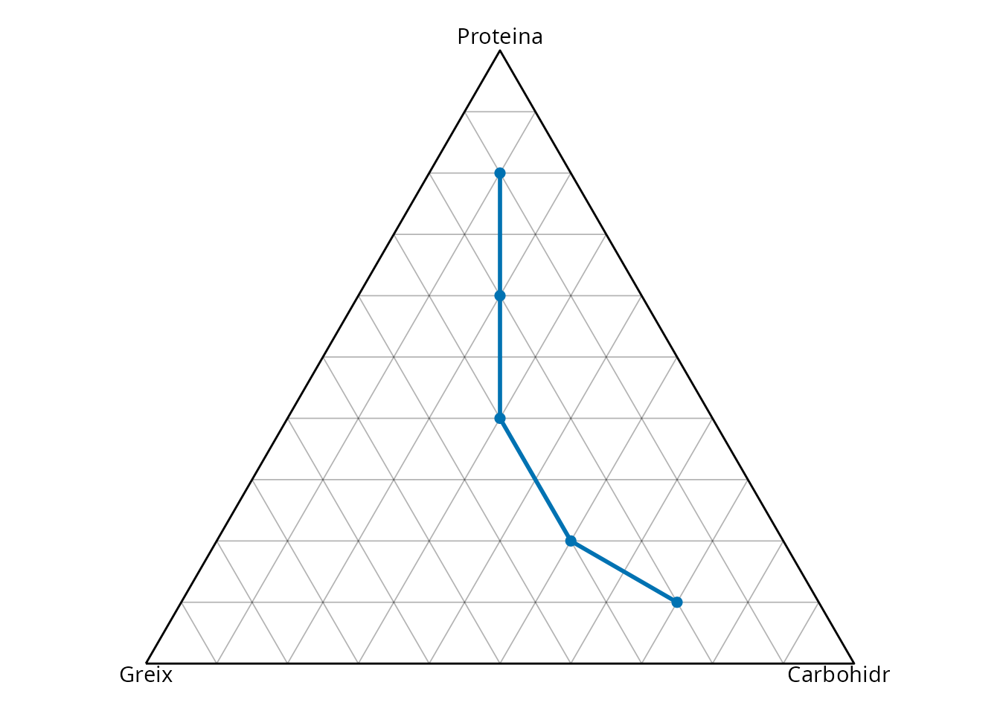
add_ternary_pc() permet afegir les direccions principals
manualment. És l’equivalent modular de show_pc = TRUE.
p <- ternary_base(ternary_frame(X, center = TRUE))
p <- add_ternary_points(p, X, group = grup)
add_ternary_pc(p, X, colour = "black", linewidth = 0.7)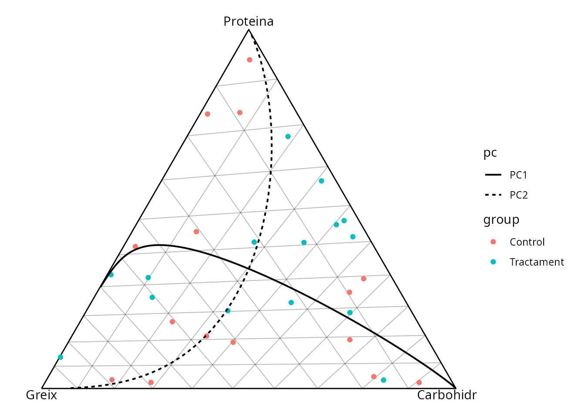
Finalment, ternary_coords() retorna les coordenades que
s’utilitzen per dibuixar. És útil per preparar anotacions o capes
personalitzades amb ggplot2.
coords <- ternary_coords(marc, X, group = grup)
head(coords)
#> c1 c2 c3 .A .B .C .x
#> 1 0.3973469 0.7499553 0.3302451 0.26892332 0.50756770 0.22350898 0.3579706
#> 2 0.1130610 2.8804064 1.1843942 0.02706193 0.68944514 0.28349292 0.2970239
#> 3 1.5074140 0.2041778 2.1363013 0.39175049 0.05306223 0.55518728 0.7510625
#> 4 0.8360404 1.8247179 1.7945151 0.18765187 0.40956362 0.40278451 0.4966104
#> 5 0.1107380 0.3626434 1.8339835 0.04799329 0.15716776 0.79483896 0.8188356
#> 6 4.0741295 0.4318313 0.3468551 0.83953927 0.08898571 0.07147502 0.4912447
#> .y group
#> 1 0.23289442 Control
#> 2 0.02343632 Control
#> 3 0.33926588 Control
#> 4 0.16251129 Control
#> 5 0.04156340 Control
#> 6 0.72706234 ControlComparar grups amb mitjanes geomètriques
geometric_mean_barplot() compara les parts entre grups.
Les barres representen desviacions respecte de la mitjana global;
include_boxplot = TRUE també mostra la variabilitat de les
observacions.
geometric_mean_barplot(X, grup, include_boxplot = TRUE)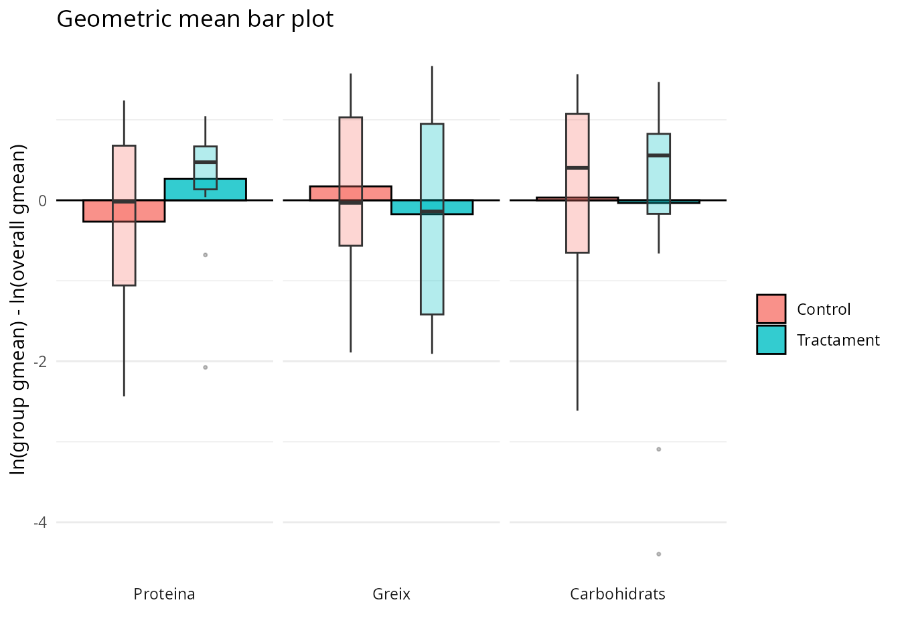
Amb clr_scale = TRUE, el càlcul es fa en coordenades
clr, adequades per interpretar diferències relatives entre parts.
geometric_mean_barplot(X, grup, clr_scale = TRUE)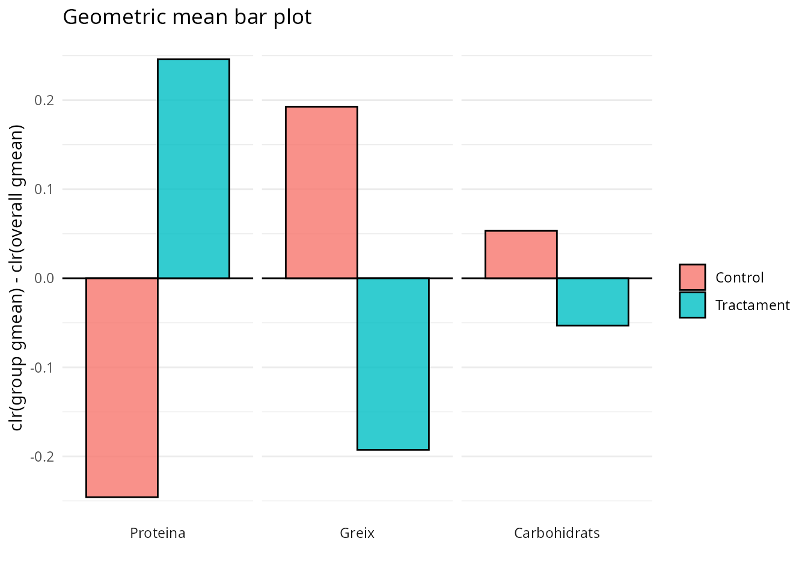
Biplot clr
Per a composicions amb tres parts o més, clr_biplot()
resumeix les observacions i les parts en dues dimensions. Punts propers
representen observacions semblants; les direccions de les etiquetes
indiquen quines parts expliquen la variació.
clr_biplot(X6, group = grup)
#> Ignoring unknown labels:
#> • shape : ""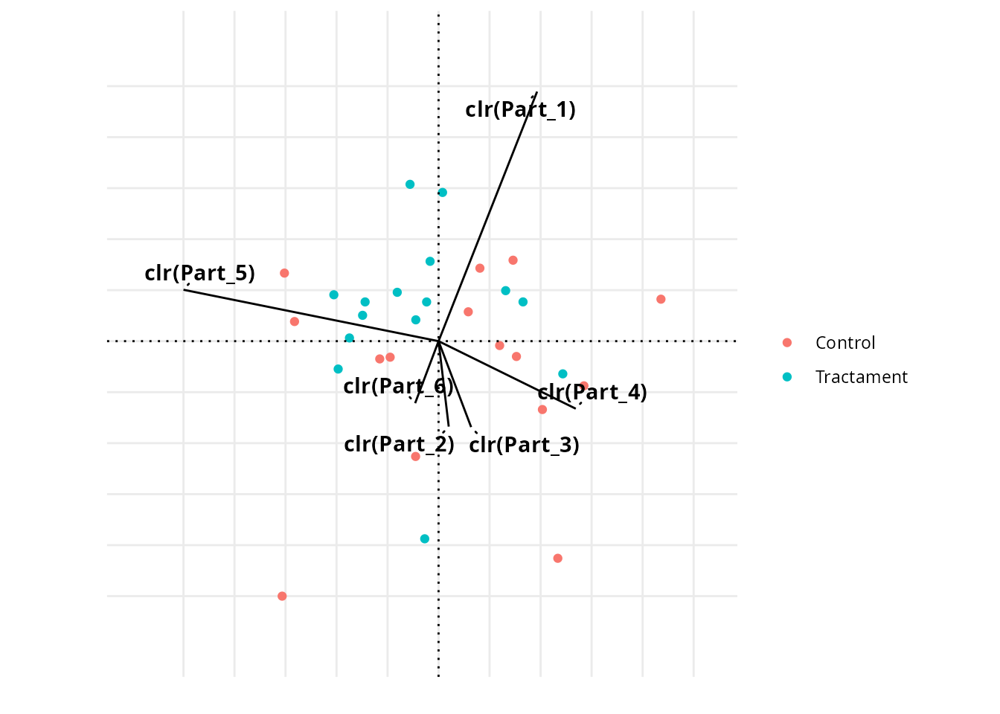
El tipus "covariance" posa l’èmfasi en les observacions,
mentre que "form" facilita la lectura de les relacions
entre parts.
clr_biplot(X6, group = grup, biplot_type = "form")
#> Ignoring unknown labels:
#> • shape : ""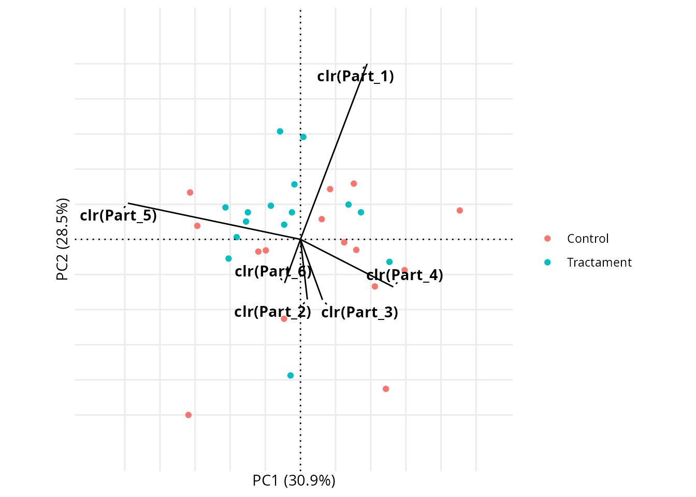
Si necessitem reutilitzar les coordenades,
return_data = TRUE retorna les dades d’observacions, les
dades de les variables i el gràfic.
resultat <- clr_biplot(X6, group = grup, return_data = TRUE)
names(resultat)
#> [1] "obs" "vars" "plot"Biplot de log-contrastos
logcontrast_biplot() representa les observacions segons
dos contrastos definits per l’usuari. Cada columna de lc ha
de sumar zero. Aquí, el primer eix compara les parts 1 i 2, i el segon
compara les parts 3 i 4.
lc <- cbind(
`Part 1 / Part 2` = c(1, -1, 0, 0, 0, 0),
`Part 3 / Part 4` = c(0, 0, 1, -1, 0, 0)
)
logcontrast_biplot(X6, lc, group = grup)
#> Ignoring unknown labels:
#> • shape : ""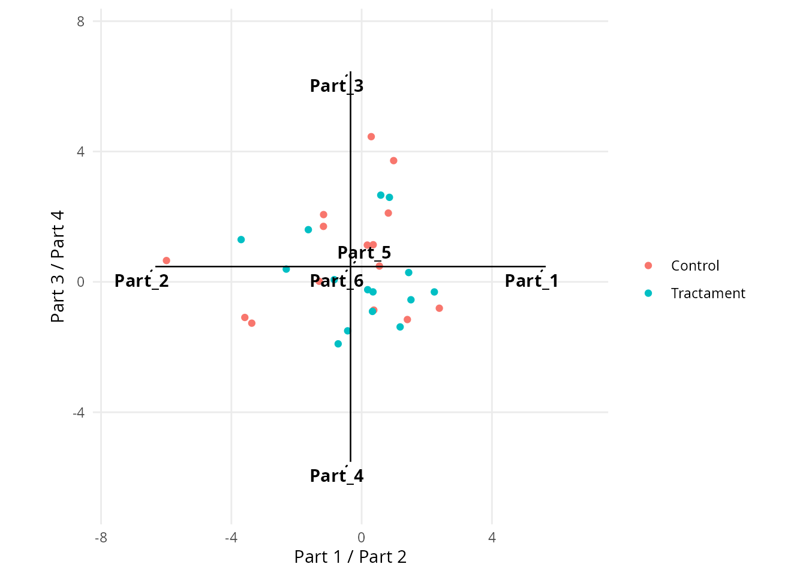
Dendrograma de balanços
balance_dendrogram() ajuda a interpretar una base de
balanços. La matriu B descriu quines parts es comparen a
cada bifurcació. Podem obtenir-ne una automàticament amb
coda.base::pb_basis().
B <- coda.base::pb_basis(X6, method = "exact")
balance_dendrogram(X6, B, group = grup)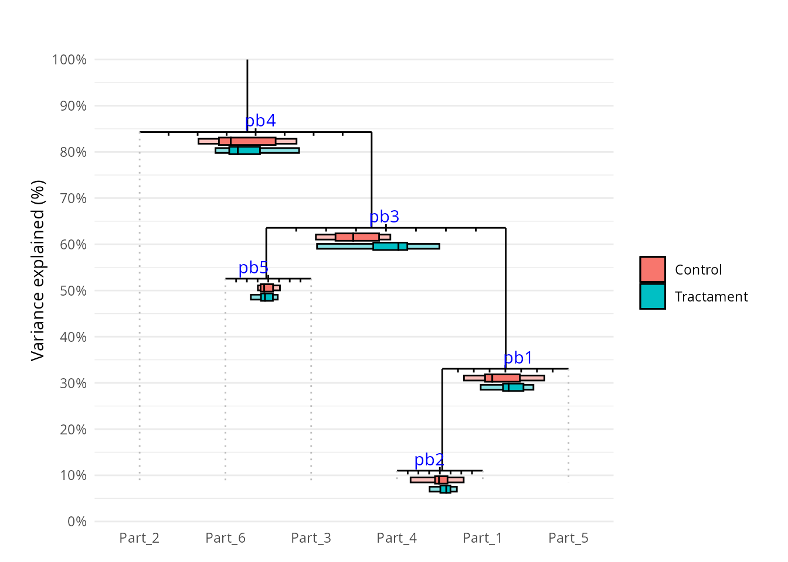
Resum de funcions
| Funció | Ús principal |
|---|---|
ternary_plot() |
Crear ràpidament un diagrama ternari complet. |
ternary_frame() |
Definir la transformació i les etiquetes ternàries. |
ternary_base() |
Crear el triangle base. |
add_ternary_grid() |
Afegir línies de graella. |
add_ternary_points() |
Afegir observacions. |
add_ternary_path() |
Afegir un camí de composicions ordenades. |
add_ternary_pc() |
Afegir direccions de components principals. |
ternary_coords() |
Obtenir coordenades per a capes personalitzades. |
geometric_mean_barplot() |
Comparar parts i grups amb mitjanes geomètriques. |
clr_biplot() |
Explorar observacions i parts en coordenades clr. |
logcontrast_biplot() |
Visualitzar dos log-contrastos definits per l’usuari. |
balance_dendrogram() |
Interpretar una base de balanços. |
Per començar, normalment n’hi ha prou amb ternary_plot()
per a tres parts i clr_biplot() per a composicions de
dimensió més gran. La resta de funcions ofereixen més control o responen
a preguntes més específiques.